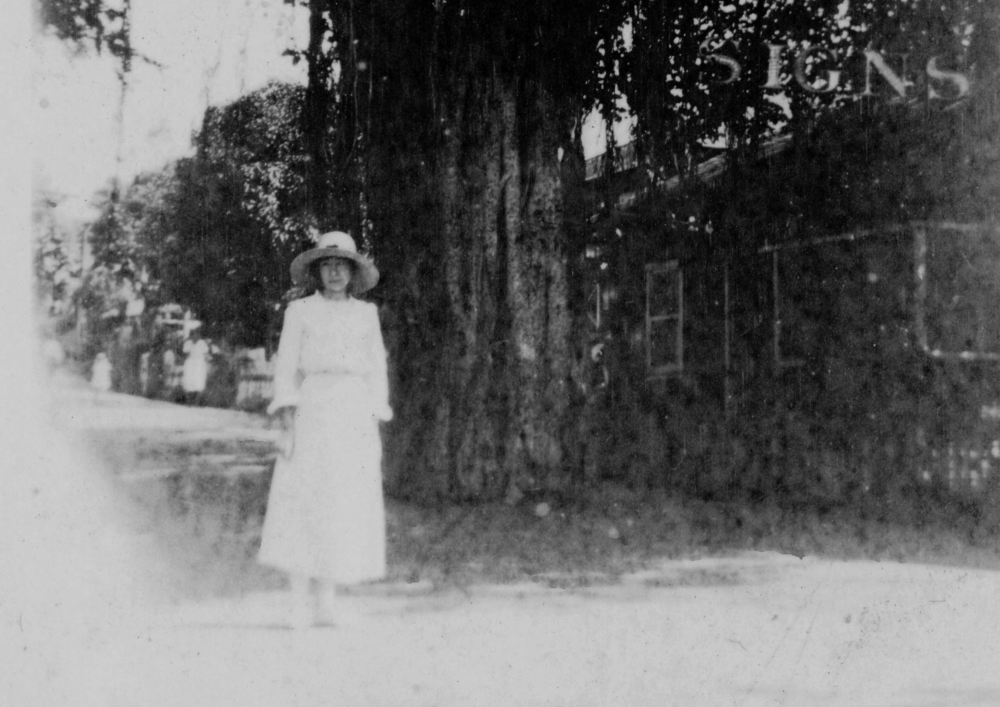
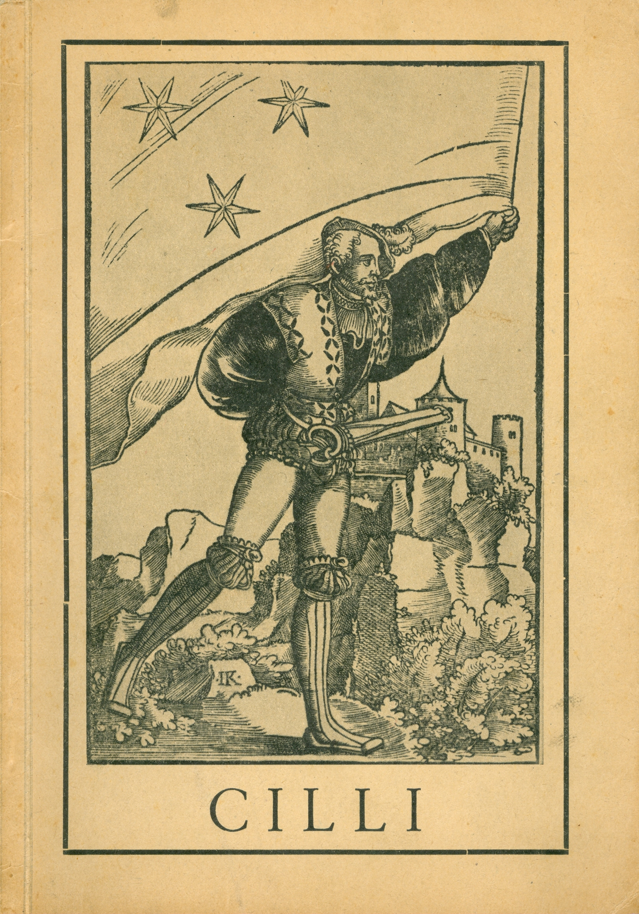
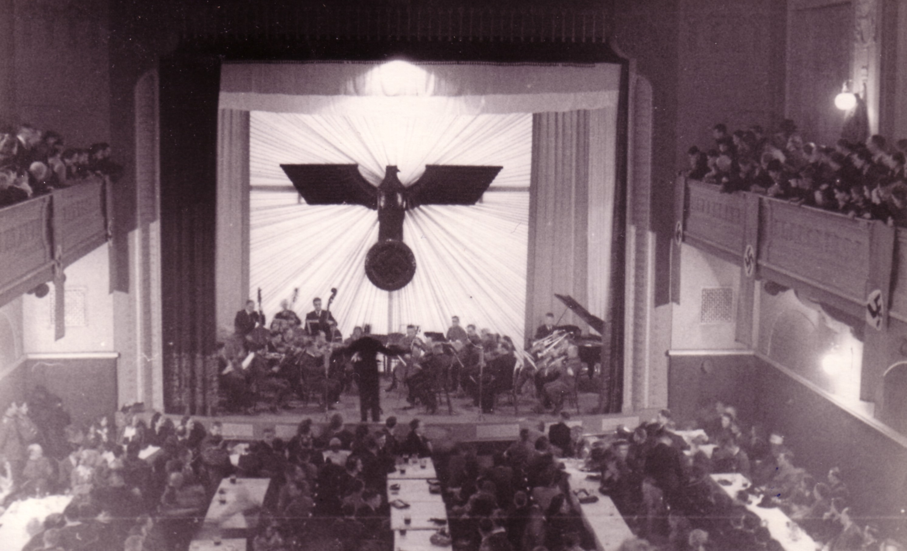
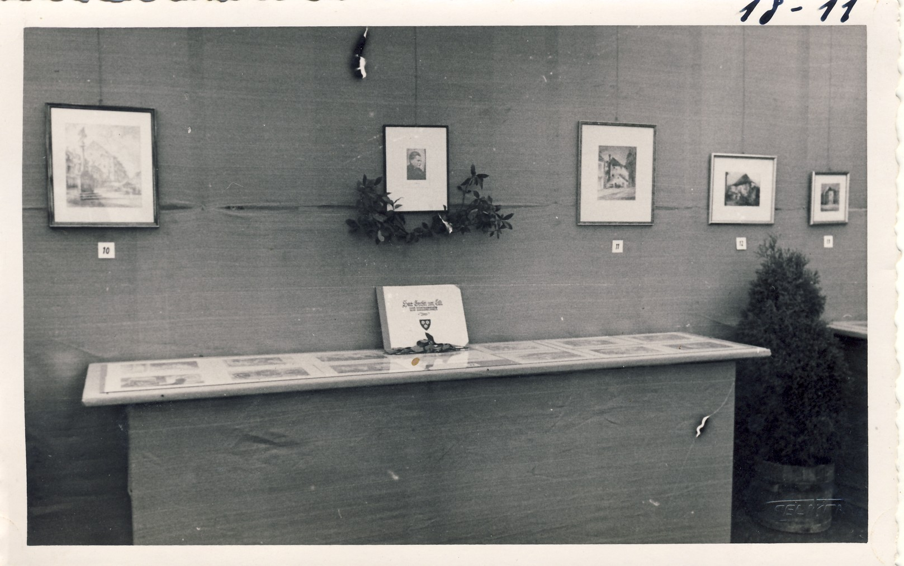

1Prispevek se posveča kulturnemu življenju in njegovim akterjem v Celju med drugo svetovno vojno. Nemški okupator je s ciljem ponemčenja dežele in njenih prebivalcev takoj po svojem prihodu pričel izvajati etnocidne in kulturocidne ukrepe, katerih prva žrtev je bila prav slovenska kultura. Posledično je bila le-ta z institucionalnega vidika povsem uničena in kadrovsko obglavljena, pa tudi od materialne kulture so bili ohranjeni le tisti kulturni spomeniki, ki naj bi dokazovali, da so okupirane dežele, med njimi tudi spodnja Štajerska, nemška kulturna tla oz. so jih ustvarili nemški umetniki. Okupacijska kulturna politika kot sestavni in zelo pomemben del širšega ponemčevalnega propagandnega aparata je zato v veliki meri izhajala prav iz te tradicije oz. njene obnove.
2Ključne besede: Celje, kultura, okupacija, Alma Karlin, Gerhard May, Mirko Hribar, Stari pisker, Štajerska domovinska zveza
1This contribution focuses on the cultural life in Celje and its protagonists during World War II. In the attempt to Germanise Slovenia and its inhabitants, the German occupiers started implementing measures for the eradication of the local ethnicity and culture immediately after their arrival, and their primary target was the Slovenian culture. Consequently, from the institutional point of view, the latter was utterly destroyed and its personnel eliminated. Only the cultural monuments created by German artists – or those allegedly proving that the occupied territories, among them Lower Styria, actually constituted the German cultural area – were preserved. Therefore, the occupiers’ cultural policy as an integral and crucial part of the broader propaganda apparatus in the service of Germanisation was largely based on the German tradition or its restoration.
2Keywords: Celje, culture, occupation, Alma Karlin, Gerhard May, Mirko Hribar, Stari pisker, Styrian Patriotic Association
1Prelomni politični preobrat ob koncu prve svetovne vojne, razpad habsburške monarhije in nastanek Kraljevine SHS, je povzročil in omogočil intenzivno slovenizacijo spodnje Štajerske in z njo Celja, ki se je ob političnem najočitneje kazala prav na kulturnem področju. Nekoč mesto dveh med seboj tekmujočih in nasprotujočih si narodov, jezikov in kultur se je v zgolj nekaj letih preobrazilo v navzven povsem slovensko mesto na čelu z ambicioznim in prodornim slovenskim meščanstvom, nosilcem politične oblasti in obenem oblikovalcem in usmerjevalcem kulturnega utripa in razvoja. V dvajsetih, še posebej pa v tridesetih letih 20. stoletja se je Celje ponašalo z razmeroma bogatim kulturnim življenjem in produkcijo; ob dejstvu, da profesionalnih kulturnih ustanov in delavcev v mestu ob Savinji praktično ni bilo, pa je vsakodnevni kulturni vrvež določalo predvsem na bogati tradiciji in ljubiteljskem elanu zasnovano društveno življenje. V začetku leta 1940 je v mestu delovalo kar 131 društev, od tega 33 prosvetno-kulturnih, se pravi takšnih, katerih primaren interes je bil prav delovanje na določenem kulturnem področju, s kulturo v najširšem smislu pa so se tako ali drugače ukvarjala tudi mnoga ostala društva, od političnih do gasilskih. Osrednje mesto je pripadlo glasbi, za kar gre zasluga zlasti glasbeni matici oz. glasbeni šoli na čelu z ravnateljem Karlom Sancinom, ki je s svojim orkestrom skrbela za bogato ponudbo in vzgojo novih generacij glasbenikov, predvsem pa so Celjani vseh generacij gojili veliko afiniteto do petja. Med vrsto pevskih društev je primat še vedno pripadal najstarejšemu, 1895. leta ustanovljenemu Celjskemu pevskemu društvu, medtem ko je v množici ljubiteljskih gledaliških skupin in družin za kvalitetno in moderno gledališko ponudbo skrbelo Dramatično društvo. Kljub majhnemu številu akademsko izobraženih umetnikov se je postopoma razvijala likovna umetnost, živahno pa je bilo tudi na literarnem in slovstvenem področju, čeprav bi o kakšnih opaznejših umetniških presežkih in prebojih težko govorili. Mohorjeva družba, ki se je iz Prevalj leta 1927 prestavila v mesto ob Savinji, je s svojim izdajateljskim programom, tiskarno in knjigarno nedvomno predstavljala pomembno oporo slovenske knjižne besede. Tudi skrb za kulturno dediščino je bila prepuščena osveščenosti in zagnanosti posameznih celjskih izobražencev, predvsem šolnikov, kot je bila npr. Vera Levstik, sicer sestra pisatelja Vladimirja Levstika, ki je kot voditeljica Javne mestne knjižnice ustvarila eno najboljših predvojnih knjižnic na Slovenskem. Ali pa zgodovinar in gimnazijski profesor Janko Orožen, ki je predsedoval Muzejskemu društvu in urejal muzejsko zbirko. Z namenom celostne predstavitve celjske kulturne ustvarjalnosti so njeni vodilni predstavniki po mariborskem zgledu maja 1938 pripravili dotlej največji kulturni dogodek, Celjski kulturni teden, ki je v aktualnih razmerah vseboval tudi opazno narodno-obrambno noto. V naslednjih letih sta mu sledila še dva, predvsem zadnji pa je že potekal v negotovem ozračju, ki je zlovešče nakazovalo skorajšnjo nasilno prekinitev komaj vzpostavljene kontinuitete. Na nacionalno drugi strani mesta se je po letu 1918 razredčena nemška manjšina znašla v kulturni defenzivi, pri čemer razen slikarjev Augusta Friderika Seebacherja in v Vojniku živeče Dorothee Hauser ter pisatelja Fritza Zanggerja pomembnejših ustvarjalcev in avtorjev niti ni več premogla. Velika izjema je seveda bila najpomembnejša celjska kulturno- umetniška osebnost tega časa, pisateljica in popotnica Alma Karlin, ki je sicer delovala znotraj nemškega kulturnega in jezikovnega okvira, a si zaradi svoje specifike zasluži posebno obravnavo. 1
2Opis celjskega kulturnega dogajanja in utripa na predvečer okupacije velja zaključiti s spominskim zapisom oz. mislijo Aleksandra Videčnika, pred vojno mladega črkostavca Mohorjeve tiskarne ter navdušenega gledališčnika in pevca, člana Gledališke družine in Delavskega odra, pevskega zbora Oljka in Celjskega okteta:
»Če bi vojna ne pretrgala kulturne tradicije v Celju, bi se mesto v tej smeri gotovo še razvijalo, saj so bili zadnja leta pred okupacijo za to dani vsi pogoji […]. Ni odveč poudariti visoke narodne zavesti naših ljudi in seveda strpnosti med različnimi političnimi skupinami. Sploh pa pri kulturnem delovanju ni bilo čutiti sovraštva in ali razprtij med našimi ljudmi zaradi drugačnega gledanja na politiko. Kultura nas je združevala v slovenstvu.«2
111. aprila 1941 so v Celje vkorakale prve enote okupatorske nemške vojske, ki jih je, podobno kot v večini ostalih spodnještajerskih krajev pričakalo precej ljudi. V prvih vrstah so bili seveda domači Nemci in člani Kulturbunda, ki so pozdravljali prihod »osvoboditeljev« ali pa so pri okupaciji in prevzemu oblasti celo sodelovali. Okupacijo je iz strahospoštovanja, pa tudi iz osebne preračunljivosti z naklonjenostjo sprejel tudi del narodno manj osveščenega slovenskega prebivalstva, ki si je obetal večji red in boljše življenje oz. nekaj podobnega, kot je bilo v nekdanji, v spominu zlasti starejših ljudi kar dobro zapisani habsburški monarhiji. Nacistični ureditvi in upravi v okupiranem Celju se na tem mestu ne bomo podrobneje posvečali, povzeti velja zgolj temeljno raznarodovalno usmeritev oz. etnocidne in kulturocidne ukrepe, ki jih je v skladu z izdelanimi načrti o ponemčenju dežele in njenih prebivalcev okupator pričel nemudoma izvajati. Okupatorske oblasti so prepovedale uporabo slovenskega jezika, odstranjevale slovenske napise, spreminjale in ponemčevale krajevna in osebna imena in uničevale vse, kar bi na kakršenkoli način pričalo o slovenskem jeziku, kulturi in videzu dežele. Razpuščena so bila vsa društva, politične ter druge organizacije, med njimi vsa slovenska kulturna društva, se pravi najvitalnejše gonilo slovenske ljubiteljske, a znotraj nje tudi visoko kvalitetne kulture. Njihovo premoženje je bilo zaplenjeno, nacisti pa so množično uničevali tudi temelje slovenske materialne kulture. Prve na udaru so se znašle slovenske knjižnice in knjige in odstranjena ali uničena je bila večina javnega, se pravi šolskega, društvenega ipd., pa tudi zasebnega knjižnega fonda. 3 Že omenjeni Aleksander Videčnik se spominja razmer v Mohorjevi tiskarni, ki so ji Nemci postavili komisarja in jo preimenovali v Cillier Druckerei, medtem ko so celjsko Zvezno tiskarno kar zaprli:
»V sami tiskarni smo odmetavali črkovni material cirilice, ruske pismenke, klišeje, tiskovine in nenazadnje vse slovenske knjige; tako tiste, ki so bile v skladiščih, kot tiste, ki so bile še v knjigoveznici […]. Zlasti nekulturno so se znašali nad knjigami. Metali so jih na kup v srednjem dvorišču in sproti vozili v papirnico Radeče, kjer naj bi jih uničevali. […] Mi, ki smo knjige delali, smo ob pogledu na ogromen kup odvrženih knjig trpeli. Šlo je za naše žulje in nekako tudi za narodovo last, predvsem pa smo se zgražali, da so Nemci uničevali tudi znanstvene knjige, med njimi tudi še nedokončano delo zgodovinarja Sovreta Stari Grki. Pole so bile že vezane, platnic pa še niso izdelali. Pogled na ta vandalizem je spominjal na srednji vek in tedanje zločine nad znanostjo in kulturo.«4
2Na udaru so bile tudi slovenske knjige v zasebni lasti, tozadevno je navodila izdajal sam zvezni vodja Štajerske domovinske zveze.5 Takrat enajstletni Miloš Mikeln, čigar oba starša sta bila zaposlena pri Mohorjevi (mati je tam v službi ostala tudi med vojno), njegov ded pa je bil nekdanji celjski župan Alojzij Mihelčič, se spominja, kako so skrivali slovenske knjige: »Potem smo vse knjige v hiši zložili v zaboje in jih odvlekli na podstrešje, pokrili z vrečami, čez pa nasuli peska in prislonili k zabojem lopate: na vseh podstrešjih je moral biti pripravljen pesek za gašenje požarov ob letalskih napadih, to so blokfirerji redno kontrolirali, slovenske knjige pa so bile seveda prepovedane. Čez noč so izginile od vsepovsod.«6 O nadaljnji usodi zaplenjenih slovenskih knjig je odločal nacionalno političen referent Štajerske domovinske zveze (ŠDZ) dr. Helmut Carstanjen, po ocenah Toneta Ferenca pa se jih je še konec septembra 1943 v kapucinskem samostanu v Celju, kjer je bilo zbirališče zaplenjenih knjig (in drugih kulturno-zgodovinskih predmetov), nahajalo od osem do deset tisoč, v cerkvi sv. Jožefa pa npr. 80 zabojev.7 Po zaslugi radeških papirničarjev se je velik del omenjene zaloge Mohorjeve družbe, s polami Starih Grkov vred, vendarle ohranil, ponj pa sta leta 1945 odšla prav Mikeln in njegov oče.8
3Obenem se je že v prvih dneh okupacije začel izvajati obračun z delom prebivalstva, ki je po predvidevanjih predstavljal največjo oviro tovrstnemu raznarodovanju. Temeljni načrt za uničenje slovenskega naroda kot etnične enote je ob nemški kolonizaciji ter popolnem ponemčenju preostalih Slovencev namreč predvideval izgon velikega dela narodno zavednih Slovencev in protifašistov, predvsem izobražencev ter drugih kulturno in gospodarsko močnejših slojev slovenske družbe, katerih imetje je bilo predvideno za utrjevanje nemštva v zasedeni deželi. Pri tem je treba upoštevati dejstvo, da so celjsko kulturno dejavnost in življenje oblikovali, usmerjali, organizirali in vodili praviloma izobraženci, med katerimi je bilo zlasti veliko učiteljev oz. srednješolskih profesorjev, še posebej tistih z gimnazije, njihova kulturna dejavnost pa je bila tesno povezana s prizadevanji za ohranjanje in krepitev slovenske narodne zavesti in identitete, zato so se vodilni celjski kulturniki znašli med prvimi žrtvami nacističnega nasilja. 9 Po aretaciji so jih kot ostale slovenske izobražence s Celjskega zaprli v mestno kasarno, celjski kapucinski samostan in celjske sodne zapore oz. Stari pisker, nakar je bila med junijem in septembrom 1941 večina njih skupaj z družinami izgnana – v glavnem že v t. i. prvem valu v Srbijo, ki se je začel 7. junija in je trajal do 10. julija 1941.
4Zapornikom v samostanu in Starem piskru je uspelo obdržati tudi visoko mero zavesti, poguma in ponosa, pri čemer je treba še posebej izpostaviti skrivno izdajanje humorističnega zaporniškega lista med majem in junijem 1941. Najprej so ga začeli izdajati samostanski zaporniki, med njimi tudi zaprti duhovniki, ki so ga na osnovi predvojnega priljubljenega humorističnega časopisa Toti list poimenovali Kapucinski toti. Izdali in razmnožili so pet številk, njihovemu zgledu pa so sledili tudi v Starem piskru, kjer so ga poimenovali Toti Stari pisker. Pod uredništvom dr. Ervina Mejaka so izšle štiri številke, v njih pa so zaporniki na humoren ter na trenutke celo luciden način sami opisovali svoje jetniško življenje in delo ter pri tem z optimizmom razbijali malodušje in potrtost. 10
5Izmed celjskih likovnih umetnikov in pedagogov je izgnanska, čeprav kasneje različna usoda, doletela Alberta Sirka, Cveta Ščuko in Miroslava Modica. Medtem ko se je Sirk v izgnanstvu kar dobro znašel in v Zaječarju decembra 1941 celo razstavljal, so Modica kot partizanskega sodelavca maja 1944 v Arandjelovcu ubili četniki, Cveto Ščuka pa je od novembra 1942 kot izgnanec poučeval v Gradcu in Admontu in s svojimi deli celo sodeloval na razstavah v Celju in Mariboru.11 Ob njih so Nemci izgnali tudi umetnostnega zgodovinarja in kritika Frana Šijanca ter najvidnejše in najaktivnejše celjske kulturnike – gledališčnika Fedorja Gradišnika, pisatelja Frana Roša, pevovodjo Josipa Peca Šegulo, že omenjenega zgodovinarja Orožna, knjižničarko Levstikovo in druge. V izgnanstvu se je znašlo tudi veliko število ostalih aktivnih članov kulturnih društev, mnogi so pred preganjanjem sami pobegnili v Ljubljano oz. Ljubljansko pokrajino, a tudi tiste, ki so se prvemu udaru okupatorjevega nasilja uspeli izogniti, so kmalu čakale mnoge preizkušnje. Zlasti mlajše, ki so morali na delo v Nemčijo, ki so postali obvezniki v nemško delovno službo in vojsko ali pa so se vključili v odporniško gibanje. Pri tem se velja za trenutek ustaviti tudi pri kulturni ustvarjalnosti in umetnosti v okviru slovenskega uporniškega, narodnoosvobodilnega in revolucionarnega gibanja. Tako literarna kot življenjska pot predvojnega celjskega gimnazijca, sicer Šoštanjčana, Karla Destovnika Kajuha je dobro raziskana in znana, zato se ji na tem mestu ne bomo posvetili. Vsaj približno primerljivega literata med Celjani, ki so sodelovali v uporu ali pa so se po spletu okoliščin znašli pod orožjem v drugih uniformah, resda ne najdemo, gotovo pa generacija mladih ljudi, med katero je bilo pesnjenje dokaj priljubljeno, tudi med vojno ni povsem obmolknila. Redek ohranjen primer tega predstavljajo pesmi mladega partizana Ludvika Zupanca, doma iz bližnje rudarske Zabukovice, prvoborca Savinjske čete in Štajerskega bataljona. Zupanc, s partizanskim imenom Ivo, je že od samega začetka vojne pisal pesmi, ki sicer ne premorejo večje literarne vrednosti, so pa odličen vir za razumevanje svetovnega nazora in vrednostnega sistema mladega narodno zavednega in revolucionarno usmerjenega delavca, čigar odločitev za odhod v partizane je imela tragične posledice za vso družino, saj je bil oče kot talec ustreljen aprila 1942, mati pa je istega leta umrla v Auschwitzu. 12
6Še večjo zgodovinsko dragocenost predstavlja snopič pesmi, nastalih v celjskem zaporu leta 1942, v času najhujšega nacističnega terorja na Štajerskem. Dolga desetletja je namreč veljalo prepričanje, da z izjemo pretresljivih poslovilnih pisem, ki so jih zaporniki pisali pred smrtjo,13 in že omenjenega humorističnega lista Toti Stari pisker iz zgodnje, vendarle milejše faze dogajanja v zaporu, v njem v času vojne ni nastal ali se vsaj ni ohranil drug zapis, zlasti ne literaren. Pa vendarle je Mirko Hribar, železničar in član odporniškega gibanja iz Sevnice, jeseni 1942 v celici Starega piskra na roko napisal nekaj pesmi in jih vložil v ovitek stare knjižice. Pesmi je namenil, posvetil in tudi uspel skrivaj poslati ženi Mari in hčeri Marjanci nekaj dni, preden so ga poslali v Mauthausen, kjer je bil leta 1944 ubit. Hribarja, ki pred tem nikoli ni pesnil, sicer ni mogoče enačiti z že omenjenim Kajuhom, ki je tudi sam že maja 1941 v zaporu v Šmartnem pri Slovenj Gradcu napisal »Nenapisano pismo iz ječe«, ali drugimi vidnimi pesniki upora. Pa vendarle njegova intimna lirična poezija zaradi svoje globoke izpovednosti, konteksta svojega nastanka ter avtorjeve usode ob dokumentarni premore tudi literarno vrednost, zato je toliko pomembneje, da je ta skrbno varovani družinski zaklad osemdeset let od nastanka po zaslugi potomcev vendarle prišel v javnost, in sicer v faksimilirani izdaji z naslovom Šopek iz mojega dušnega vrta, pri čemer gre za Hribarjeve besede iz spremnega poslovilnega pisma soprogi.14
1Okupacijsko nasilje ni prizadelo le Slovencev oz. zgoraj omenjenih slovenskih kulturnih ustvarjalcev. Na črni listi se je namreč znašla tudi nedvomno največja umetniška in literarna osebnost takratnega Celja, svetovna popotnica in pisateljica z mednarodnim ugledom Alma Maksimiljana Karlin. Čeprav je Karlinova ustvarjala v nemškem jeziku in se tudi sama uvrščala v nemški kulturni krog, konec koncev je bila tudi članica nemške kulturniške zbornice, se je zaradi svojega izpričanega antinacizma in nekaterih tozadevno starih grehov – v letih 1937 in 1938 je nudila zatočišče Joachimu Bonsacku,15 nemškemu političnemu emigrantu ter dunajskemu judovskemu pisatelju, in policijskemu uslužbencu Edmundu Ottu Ehrenfreundu alias Ubaldu Tartarugi, s čemer si je nakopala srd celjskih kulturbundovcev in nacistov – znašla med prvimi aretiranimi Celjani. Najprej je bila zaprta v kapucinskem samostanu, nato pa prepeljana v Maribor, v tamkajšnje zbirno taborišče v meljski vojašnici. Za zapahe so jo spravili domači celjski nacisti, katerih sovraštvo do Alme je že nekaj let strmo naraščalo in ni popustilo niti po tem, ko je bila po posredovanju njene prijateljice in sopotnice, slikarke Thee Gammelin, 16 ter njunih vplivnih zaščitnikov iz rajha izpuščena in se je vrnila domov. Konstantno nacistično ustrahovanje in posledično tudi strah za življenje sta skupaj s težkim materialno-eksistenčnim položajem Karlinovo privedla v hudo psihofizično stisko, ki jo je dodatno poglabljala nezmožnost oz. prepoved izdaje njenih del. Ali kot je sama zapisala: »Precej velikih del je vse od Hitlerjevega prihoda na oblast čakalo skritih. Po letu 1938 niso izhajale niti manj pomembne stvari. Moje knjige so se kopičile v omari, jaz pa sem morala revna in v preobleki živeti med sovražniki, odrezana od vsega, kar je zame pomenilo življenje. Med prsti, ki so postajali trudni, je moje življenje odtekalo kot kri iz ranjenega telesa.«17 Vendarle pa ji je v teh razmerah prav pisanje predstavljalo beg pred mračno stvarnostjo, zato je še naprej intenzivno ustvarjala. Jeseni in pozimi 1941 se je ravno z glasbo in pisanjem zatekala v mistični čarobni svet ter tako ubežala grozljivemu vsakdanu, leta 1943 pa naj bi po lastnih besedah dokončala tako svoje »veliko delo« kot tudi eno izmed kratkih zgodb. 18 Obenem se je dobro zavedala, da je svoboda še daleč, in ker na kakršnokoli že spravo z nacisti ni bila pripravljena pod nobenim pogojem, se je kot edina rešitev iz takšnega položaja ponujal le fizični umik. Po opozorilu, da ji preti taborišče, se je že leta 1943 odločila za pobeg iz Celja in skupaj s Theo sta se zatekli k prijateljem v Nürnberg, a je bilo tudi takšno napol ilegalno bivanje v rajhu zanju še zmeraj prenevarno, zato se je Thea, ki kot nemška državljanka vendarle ni bila v tolikšni nevarnosti, kmalu vrnila k svoji ostareli materi v Celje, Alma pa se je v upanju, da se ji bo čez Italijo nekako uspelo prebiti do Švice, sama odpravila na Tirolsko. To je bilo, upoštevajoč Almino zdravstveno stanje, finančni položaj ter pomanjkanje vsakršne tozadevne komunikacije in logistike, povsem iluzorno, zato se za to pot niti ni odločila in kmalu ji ni preostalo drugega kot povratek v Celje, kjer pa se je položaj iz dneva v dan slabšal. Pozimi 1943/44 jo je po lastnih besedah preveval obup: »Moja omara se je polnila s knjigami, od katerih nobena ni izšla. Zdelo se je, da bo moje življenjsko delo ostalo brez nagrade, vse žrtve brez sadu.« 19 Svoje življenje je primerjala s pustinjo in pogosto razmišljala o samomoru. Še vse leto 1944 se je borila z malodušjem kot posledico težkih življenjskih razmer, močno načetega zdravja ter strahu in negotovosti, saj naj bi celo izvedela, da je na seznamu teh, ki jih nameravajo nacisti ob svojem porazu likvidirati. Praktično edina možnost, ki ji je preostala, je bil pobeg tja, kjer je nacistična roka ne bi mogla doseči, po možnosti seveda k zahodnim zaveznikom, natančneje Angležem, ki jih je tudi s svetovnonazorskega vidika smatrala za somišljenike in garante svobode tako nje same kot njenega dela. Kot splošno znana nasprotnica nacizma v domačem Celju je poiskala zvezo s slovenskim osvobodilnim gibanjem ter se v upanju, da ji bo preko njih in z njihovo pomočjo uspelo priti do Angležev, avgusta 1944 odpravila med partizane. Gammelinova je ostala v Celju, se kot kurirka in obveščevalka aktivneje vključila v odporniško gibanje, tik pred koncem vojne pa jo je celo napadel in obstrelil neki umikajoči se ustaš. 20 Partizanska izkušnja Karlinove je zgodba zase, dejstvo pa je, da ji do Angležev ni uspelo priti in da je osvoboditev pričakala v Dalmaciji, od koder se je leta 1945 vrnila v Celje ter tam v bedi, bolezni in grenkobi preživela še zadnjih pet let svojega življenja. Kot rečeno, je Karlinova tudi med vojno veliko ustvarjala. Tako naj bi imela v okupiranem Celju sredi leta 1944 napisanih in neobjavljenih že 38 naslovov svojih najboljših del, 21 s pisanjem pa je nadaljevala tudi pozneje med partizani in na osvobojenem ozemlju. Velik del v tem času ustvarjenega opusa se tematsko navezuje prav na vojno obdobje in dogajanje, ki mu je bila priča. Gre zlasti za liriko, ki jo po besedah Neve Šlibar, ki je Almino medvojno ustvarjalnost in zapuščino raziskala ter kritično ovrednotila, lahko opišemo kot »pesmi tožbe in tolažbe«. 22 V obdobju med 1940 in 1945 naj bi nastalo od 40 do 50 pesmi, med njimi je ohranjenih kar nekaj z izrazito protifašistično in partizansko tematiko, še več t. i. »partizanskih« pesmi in balad pod skupnim nazivom Moj dar partizanom pa velja za izgubljene. Med Alminim bivanjem na osvobojenem ozemlju je nastalo oz. je s tistega časa ohranjenih tudi šest kratkih pripovedi s partizansko in vojno tematiko, najpomembnejši Almin tekst, povezan z vojno in okupacijo, pa predstavljajo tri avtobiografska besedila, napisana po vojni, od koder so tudi zgornji citati. Širši, pa tudi strokovni javnosti so bila dolgo časa nedostopna, od leta 2007 jih v skupni izdaji pod naslovom Moji zgubljeni topoli lahko beremo v slovenskem jeziku, od leta 2021 pa tudi v nemškem originalu. 23 Almini spomini na drugo svetovno vojno, katere večji del je preživela prav v okupiranem Celju, ne predstavljajo samo enega redkih ohranjenih pričevanj o razmerah v Celju v letih 1941–1944, in zato kljub nekaterim netočnostim nadvse dobrodošel in uporaben zgodovinski vir, temveč so dragoceni tudi zaradi zapisane in v zgodovinskemu spominu ohranjene izkušnje ene najnenavadnejših pojav in enega najbolj nekonvencionalnih, kompleksnih in kritičnih duhov, kar jih je sodelovalo v slovenskem narodnoosvobodilnem oz. antifašističnem boju. 24

Hrani: Arhiv MnZC, fond Alme Karlin1Slovenska kultura v Celju je bila torej z institucionalnega vidika povsem uničena, kadrovsko obglavljena, pa tudi od materialne kulture naj bi bili ohranjeni le tisti kulturni spomeniki, ki naj bi dokazovali, da so okupirane dežele in med njimi Spodnja Štajerska nemška kulturna tla oz. so jih ustvarili nemški umetniki.25 Pri promociji nemške kulture se okupacijske oblasti niso mogle bistveno opreti na aktivne, v Celju delujoče nemške kulturnike. Gospodarsko močna nemška manjšina, med njo so bili nedvomno tudi poznavalci in ljubitelji kulture in umetnosti, kakšnih pomembnejših ustvarjalcev in avtorjev namreč ni premogla. Najpomembnejši celjski slikar nemškega rodu August Seebacher je umrl konec leta 1940, odvetnik dr. Fritz Zangger, po mnenju prof. Orožnove verjetno edini celjski nemški pisec v 30. letih 20. stoletja, pa okupacije oziroma »osvoboditve« tudi ni dočakal, saj je umrl 31. avgusta 1939. Slednji je v svojih na pol avtobiografskih delih z »izrazito nemško-nacionalističnim podtonom« opisoval zlasti kulturnozgodovinsko podobo »nemškega« Celja konec 19. stoletja oz. se je posvečal nemškemu kulturnem izročilu in tradiciji v mestu. 26 Zangger je bil tudi osrednja osebnost Nemškega pevskega društva v Celju, ki je med obema vojnama predstavljalo osrednje kulturno sidrišče nemške manjšine in je imelo poleg kulturnega tudi močan nacionalno političen pomen, 27 zato je v nemških očeh Zangger, sicer tudi častni član zveznega vodstva Kulturbunda, veljal za »enega najzanesljivejših borcev za nemštvo na Spodnjem Štajerskem«28 ter je bil kot zaslužni občan deležen vrste simbolnih gest s strani novih oblasti. Po Zanggerju so poimenovali pred tem Slomškov oz. Cerkveni trg, Celjsko nemško moško pevsko društvo s tradicijo od srede 19. stoletja pa je svoj prvi koncert po okupaciji oz. »osvoboditvi«, izveden konec novembra 1941 v okviru kulturnih prireditev, ki jih je po celotnem okrožju priredil Urad za ljudsko izobraževanje, namenilo prav njegovemu spominu.29 Tako kot Zangger je tudi Seebacher dobil svojo ulico (današnja Gubčeva), spomladi 1942 je mestni urad za kulturo izdal prodajno mapo ponatisov njegovih zadnjih grafik, 30 kasneje pa so bila na ogled postavljena tudi njegova druga originalna dela. Nemška kulturna tradicija tako Celja kot celotne Spodnje Štajerske je bila, kot so Nemci radi poudarjali, pred triindvajsetimi leti s strani srbskih in slovenskih »nasprotnikov nemštva« nasilno pretrgana, nemška kultura pa vse do »osvoboditve« zatirana in onemogočana, zato je okupacijska kulturna politika v veliki meri izhajala prav iz te tradicije oz. njene obnove. Ko govorimo o kulturni politiki, se moramo zavedati, da je bila slednja sestavni in zelo pomemben del širšega ponemčevalnega propagandnega aparata z jasno določenimi nacionalno političnimi cilji. Na zveznem oz. pokrajinskem nivoju je to področje – ob že omenjenem nacionalno političnem referentu Carstanjenu – vodil in usmerjal Vodstveni urad II ŠDZ, znotraj katerega je ob propagandnem in tiskovnem deloval tudi Urad za kulturo. 31 Slednji je bil s svojimi delovnimi področji – glasba, literatura, upodabljajoča umetnost, prostorsko urejanje in domoznanstvo – »osrednje mesto za celotno kulturno načrtovanje in vodenje«.32 Podobno je bilo tudi na nivoju okrožij. Funkcijo vodje Vodstvenega urada II za celjsko okrožje je veči del okupacije opravljal Celjan Eduard Paidasch, na čelu okrožnega Urada za kulturo pa je bil dr. Wilhelm Herzog, sicer ravnatelj celjske nemške gimnazije. 33 Posredovanje »kulturnih in družbenih dobrin nove Nemčije« je bila tudi ena od nalog Urada za ljudsko izobraževanje ŠDZ, katerega temeljno »poslanstvo« je bilo ponemčenje prebivalstva.34 Urad se je prvenstveno posvečal jezikovnim tečajem nemščine za odrasle, ob tem pa je, kot smo že navedli, organiziral tudi kulturne prireditve ter, najraje v veliki dvorani Nemške hiše, prirejal različna predavanja. Med njimi so bila tudi takšna, ki so se neposredno dotikala kulturnih vprašanj, eno prvih, septembra 1941, je bilo namenjeno nemškim pesmim o delu oz. pesništvu in pesnikom iz delavskih vrst.35 Predavatelji so bili predvsem gostje iz rajha, med njimi pa občasno tudi kakšen Celjan. Maja 1942 je na povabilo okrožnega Urada za kulturo pod Herzogovim vodstvom o celjski kulturni zgodovini predaval celjski odvetnik in bibliofil dr. Georg Skoberne,36 nekaj mesecev kasneje pa je sledilo predavanje dr. Maya o celjskih kulturnozgodovinskih spomenikih.37
2In ravno dr. Gerhard May, celjski protestantski pastor in predvojni vodja Kulturbunda za celjsko okrožje, je bil osrednja osebnost okupacijske kulturne dejavnosti v Celju. Kot kulturni in nacionalno politični referent vodstva ŠDZ za celjsko okrožje, obenem pa tudi kulturni referent v Celju oz. vodja celjskega mestnega urada za kulturo je bil namreč glavni akter kulturne politike tako v Celju kot v celotnem celjskem okrožju. Dr. May je bil tudi avtor brošure z naslovom Cilli; Stadt, Landschaft, Geschichte, ki jo je leta 1943 izdal Urad za kulturo mesta Celje in v kateri je po besedah Frana Roša »izpričal svoje sovraštvo do Slovencev«.38 Prvi izdaji je sledila še druga, namenjena in poslana približno 950 Celjanom, ki so bili leta 1943 v nemški vojski in RAD, obe izdaji pa sta bili razprodani.39 Dejansko gre v knjižici za nemški nacionalistični pogled, seveda diametralno nasproten slovenskemu, ter temu primerno pristransko in selektivno interpretacijo zgodovine tega prostora vse do prihoda »osvoboditeljev« oz. dne, ko se je «Celje spet vrnilo domov v Nemški rajh«.40 Pri opisovanju kulturne preteklosti Celja in njegovih pomembnih mož je May še posebej izpostavil pesnika Johanna Gabriela Seidla (1804–1875), ki je v tridesetih letih 19. stoletja kot gimnazijski profesor živel in ustvarjal v Celju.41 In prav s Seidlom je bil povezan eden prvih velikih kulturno-prosvetnih dogodkov v okupiranem Celju. Otvoritev nemške gimnazije je namreč nova oblast povezala s ponovno postavitvijo oz. odkritjem Seidlove reliefne spominske plošče, ki so jo prvič odkrili ob stoletnici njegovega rojstva leta 1904, po prvi svetovni vojni pa so jo slovenske oblasti odstranile ter oboje skupaj nadvse slovesno obeležile. Svečano nedeljsko dogajanje je spremljal tudi takratni osrednji spodnještajerski časopis, uradno glasilo Štajerske domovinske zveze, dnevnik Marburger Zeitung, ki je ob tej priliki zapisal:
»Slovesnost v Nemški hiši se je pričela s fanfarami nemške mladine, nakar je okrožni vodja Dorfmeister razglasil otvoritev celjske gimnazije. Celjski godalni kvartet je zaigral Haydnove Variacije. O pomenu celjske gimnazije in nemške vzgoje, kateri je firer položil temeljni kamen, je govoril ravnatelj gimnazije dr. Herzog. Po končani slovesnosti v Nemški hiši se je šolska mladina skupaj z veliko množico ljudi zbrala pri vogalni hiši Prinz-Eugenstraβe- Bahnhofgasse, (današnja Stanetova in Prešernova ulica, op. a.) kjer je župan Himmer odkril spominsko ploščo. Poklonil se je pesnikovim stvaritvam in poudaril njegove zasluge za mesto ob Savinji.«
3Mariborski list pridaja povezanemu praznovanju obeh dogodkov velik simbolni pomen: »Celje ima sedaj spet svojo nemško gimnazijo, ki jo v prihodnosti čakajo velike naloge. Združitev otvoritve gimnazije z odkritjem spominske plošče ima poseben pomen. Nemško ostane to mesto za vse čase, bolj nemško kot je kdajkoli bilo.« 42

Hrani: Arhiv MnZC4May je bil med drugim odgovoren tudi za materialno kulturno dediščino, pri čemer je tesno sodeloval z graškim deželnim konservatorjem in poverjenikom za zaščito kulturnozgodovinskih spomenikov dr. Semetkowskim, februarja 1942 pa je bil imenovan za kustosa mestnega muzeja,43 ki so ga na njegovo pobudo poleti 1942 začeli obnavljati.44 Muzej so sicer sestavljali trije deli na različnih lokacijah, v lapidariju, stari gimnaziji in glasbeni šoli, zato si je May prizadeval za nove prostore v kapucinskem samostanu. Gradbeni načrti so bili že dokončani, a zaradi stanovanjske stiske do izvedbe ni prišlo. May je uredil tudi bogato muzejsko knjižnico s približno 3000 knjigami, med njimi tudi tistimi slovenskimi, ki so po njegovem mnenju obravnavale tudi nemški prostor in bile nujne za znanstvenoraziskovalno delo. Zavezniško bombardiranje Celja je 14. februarja močno poškodovalo (Brodarjevo) zbirko paleontoloških najdb iz Potočke zijalke, saj je bilo uničenih 150 lobanj jamskega medveda, zato so najdragocenejše eksponate preselili na varnejše lokacije. 45
5Avgusta 1943 je May iz zveznega vodstva ŠDZ v Mariboru prejel dopis s prošnjo, da za potrebe velike kulturnozgodovinske razstave v okviru kulturnega tedna v Mariboru konec septembra, ki naj bi kasneje gostovala tudi po drugih krajih, iz celjskega muzeja posodi nekaj gradiva. Osnovni namen razstave je bil v dokazovanju, »da je bila spodnještajerska kultura vedno izključno nemška, pa tudi v času nacionalnih težav je bila pod nemškim vplivom«. Iz ohranjene Mayeve korespondence je razvidno, da so si snovalci razstave iz celjskega muzeja želeli grafične liste, slike in dokumente o celjskih grofih, eksponate in dokumente iz celjskega gledališkega življenja, dokumente o uspehih 47. in 87. pešpolka cesarske armade, dokumente o gradnji celjskega doma, knjigo celjskih umetnikov ter dokumente in druge spominske predmete iz obdobja prevrata in kraljevine. Končno so za potrebe razstave z naslovom Deutsche Kultur in der Steiermark izbrali posojilno listino celjskih grofov, tri mojstrska pisma oz. spričevala iz let 1739, 1802 in 1813, akvarel Celja iz leta 1750, gledališki list iz 1802, možnar, sodno palico iz Teharij ter še nekaj arheoloških najdb in predmetov iz grobov.46 Na zaključni prireditvi kulturnega tedna, ki je potekal med 25. 9. in 3.10. 1943, je v mariborski kazinski dvorani nastopil tudi celjski godalni kvartet, na tekmovanju pevskih skupin pa celjsko moško pevsko društvo, »katerega uspehe poznajo po vsem Spodnjem Štajerskem«, ni prejelo nobene nagrade, medtem ko je celjsko amatersko gledališče nastopilo izven tekmovalnega programa. Prireditve so potekale predvsem v Mariboru in Slovenj Gradcu, medtem ko Celje, vsaj sodeč po poročanju tiska, v sam kulturni teden ni bilo neposredno vključeno.47
6May je bil tudi iniciator nemške knjižnice v Celju. Že junija 1941 je podal predlog, da se v poslopju sedeža okrožja, t. i. Kreishausa v nekdanjem Narodnem domu, uredi ljudska knjižnica, znotraj katere naj se ustanovi in deluje tudi Študijska knjižnica za Spodnjo Štajersko. V slednji bi bilo s posebnim dovoljenjem in v znanstvene namene mogoče uporabljati tudi v ta namen zbrano zaplenjeno slovensko strokovno literaturo ter najpomembnejše leposlovje, kot denimo Prešerna in Cankarja. Knjižnico naj bi vodila v Leipzigu izšolana knjižničarka, doma sicer iz Sevnice. 48 Okrožni vodja Dorfmeister je prošnji ugodil in 16. marca 1942 je bila knjižnica v Celju kot »prva od več stotih na Spodnjem Štajerskem« tudi svečano in v prisotnosti uglednih gostov odprta, le da ne na prvotno predvidenem mestu, temveč v stari spomeniško zaščiteni hiši dr. Gollitscha na Glavnem trgu, takrat Marktplatzu št. 9. V celotnem celjskem okrožju naj bi sicer bilo vzpostavljenih dobrih 50 knjižnic, od tega je bilo junija 1942 dejavnih 18. 49 Kot je bilo načrtovano, je knjižnico vodila bibliotekarka Waltraut Dunker, ki je imela pomembno vlogo tudi pri izboru knjig, svetovanju ter osveščanju bralcev, zlasti ker po Mayevih besedah v knjižnici ni bilo prostora za »kič in šund in pogosto dvomljivo literaturo«, ampak je kot vzgojni in izobraževalni prostor »imela nalogo ljudstvu posredovati samo kvalitetno knjigo in s tem bistveno vsebino nemškega duhovnega življenja«. 50 Na dan otvoritve je knjižnica štela 2110 knjig, v šestih mesecih je njihovo število zraslo na dobrih 4000, v letu dni pa na 5100 knjig. Sprva šibak obisk je iz meseca v mesec naraščal in po enem letu presegel 1800 bralcev, od katerih je bila skoraj tretjina vojakov in policistov, ne pa stalnih prebivalcev Celja, ki je takrat štelo približno 16.000 duš. V enem letu je bilo izposojenih slabih 21.000 knjig, s čemer je bil May zelo zadovoljen in je poudaril, da je »Ljudska knjižnica del kulturnopolitičnega dela in narodnopolitične izgradnje, brez katere si ravno v času vojne in v zdajšnjem položaju Celja ni mogoče zamisliti«. 51
7Knjižnica je ob svoji osnovni dejavnosti služila tudi kot razstavni prostor oz. galerija za manjše razstave. Septembra 1942 so bila denimo na ogled zadnja Seebacherjeva dela, nato Seidlovi in Wolfovi rokopisi in pisma, pa stare celjske razglednice ipd. Decembra 1942 so bile tam razstavljene originalne Dürerjeve grafike in lesorezi, leta 1943, ko je bila očitno vsak mesec nova razstava, pa še mnoge druge vsebine, od srednjeveških knjig do štirinajstih Rembrandtovih jedkanic. Njihov skupni imenovalec in namen je bil prikaz nemške umetnosti in ustvarjalnosti ter posledično poudarjanje nemškega vpliva na življenje in kulturni razvoj Celja. 52 Oktobra 1944 je May Celje zapustil, saj je bil imenovan za nadškofa evangeličanske cerkve s sedežem na Dunaju. Medtem ko je Fran Roš kasneje obžaloval, da »za svoje Slovencem sovražno delovanje ta fanatik po vojni ni odgovarjal pred sodiščem«,53 ampak je celo napredoval, pa je Alma Karlin, ki ji je May prav tako grenil življenje, v svojih spominih skorajda spravno zapisala, da je bil leta 1943 »ubogi župnik v srcu že dolgo zagrenjen protinacist in je najbrž že obžaloval svoje delovanje proti meni«.54 Vsi spodnještajerski Nemci resda niso soglašali z nemško okupacijsko politiko, zlasti njenimi najbolj brutalnimi metodami. To velja za Mayevega stanovskega kolega iz Maribora Hansa Barona, ki se je že leta 1942 pritoževal nad nemškim ravnanjem s Slovenci, nemška naci(onali)stična gorečnost pa je začela upadati zlasti po nemškem porazu pri Stalingradu. 55 V kolikšni meri je May sledil Baronu in se že med vojno dejansko odvrnil od nacistične ideologije, je težko reči, v vsakem primeru pa mu za aktivno vlogo med okupacijo nikoli ni bilo treba polagati računov, temveč je tudi po letu 1945 nemoteno nadaljeval svojo kariero znotraj evangeličanske cerkve.56
1Kot je že mogoče razbrati iz zgoraj zapisanega, je tudi nemška kulturna dejavnost med okupacijo temeljila predvsem na glasbi ter s pridom izkoriščala njeno tradicionalno vpetost v kulturno življenje (nemškega) Celja. Urad za ljudsko izobraževanje je junija 1941 organiziral okrog dvajset koncertov, ki jih je v celjskem okrožju izvedel vojaški orkester.57 Moško pevsko društvo s koreninami iz srede 19. stoletja smo že omenili, septembra 1941 pa so tako kot v ostalih večjih spodnještajerskih krajih tudi v Celju odprli nemško glasbeno šolo (Die Musikschule für Jugend und Volk). 58 Celje je kot pred letom 1918 spet premoglo tudi nemški simfonični orkester, ki je pod vodstvom direktorja Glasbene šole Gustava Müllerja 5. marca 1942 pripravil »prvi nemški simfonični koncert v Celju po skoraj 30 letih«, na programu pa sta bila med drugim tudi Mozart in Corelli. 59 Orkester je sestavljalo okrog 40 v glavnem neprofesionalnih članov, ki pa so se kljub temu lotevali kar zahtevnih del – konec leta 1942 so denimo pripravili koncert Beethovnovih simfonij60 – ter razmeroma pogosto nastopali. Marca 1943 so tako pripravili že četrti samostojni koncert.61 V Celju je med vojno deloval tudi godalni kvartet, ki je svoj prvi samostojni glasbeni večer, na programu so bili Haydn, Mozart in Schubert, v organizaciji nemškega Rdečega križa pripravil junija 1942,62 sodeloval pa je tudi na Dnevu glasbe v Celju, ki je potekal 19. junija 1942 in je bil s pestrim programom namenjen najširšemu občinstvu. Slednji se je začel z jutranjo budnico Nemške mladine po mestnih ulicah, učitelji in učenci glasbene šole so dopoldan javno muzicirali v Nemški hiši, v veliki delovni hali Westnove tovarne je nastopila godba vermanšafta, godalni kvartet pa je nastopil za ranjence v lazaretu oz. bolnici Novo Celje. Dan se je zaključil z velikim simfoničnim koncertom, ki so ga v Nemški hiši izvedli mestni simfoniki. 63 Ob domačih glasbenikih so v Celju nastopali tudi gostujoči umetniki iz rajha, med njimi Dunajski dečki, in iz zavezniških držav ter prijateljskih držav, kot npr. španski čelist ter skladatelj Gaspar Cassado.64
2Ob samostojnih kulturnih večerih so bili glasbeni nastopi tudi sestavni ali pa celo osrednji del drugih mobilizacijsko-propagandnih prireditev in akcij, kot je bilo denimo zbiranje »Zimske pomoči« za vojake na fronti. V zadnjih dneh januarja 1942 so v njenem kontekstu pripravili dva koncerta, na katerih so nastopili vojaški zbor, godba vermanšafta (Musikzug – Standarte Cilli – West), fanfaristi Nemške mladine, hišni orkester celjskega moškega pevskega društva pa kvartet Lustigen vier, duet Die Cillier Melodiker in še razni instrumentalisti in solisti, med njimi »celjski slavček«, sopranistka Heidi Hinker. Prireditev, ki je bila močno propagirana in oglaševana, nanjo so vabili z napovedjo, da bo na programu tudi pesem Lili Marleen, je očitno dobro uspela. Po besedah poročevalca so bile dvorane Nemške hiše, ki je imela med vojno vlogo nemškega kulturnega centra, napolnjene do zadnjega kotička, koncertoma pa naj bi prisostvovalo kar 3000 prebivalcev Celja, med njim zlasti veliko delavcev. Med premorom je občinstvo celo nagovoril razvpiti celjski trgovec Werner Stiger, vodja predvojnega nacističnega vohunskega centra v Celju, 65 ki se je na dopustu iz vojske mudil v rojstnem mestu prvič po okupaciji.66 Omenjena Hinkerjeva je jeseni istega leta nastopila še na samostojnem koncertu v dvorani okrožne hiše. Program so sestavljale pesmi Schuberta, Brahmsa, Huga Wolfa in Maxa Regerja ter Mozartove in Puccinijeve operne arije .67

Hrani: Arhiv MnZC, Fototeka Pelikan3V manjši meri od glasbenega so bile nemške okupacijske oblasti v Celju dejavne na gledališkem področju. Za razliko od Maribora, kjer so septembra 1941 odprli Mestno gledališče, v Celju vzpostavitve hišnega ansambla niso načrtovali. Gledališke prostore in dvorano so sicer septembra 1941 začeli obnavljati, 68 a bolj z namenom, da bi bili pripravljeni za gostujoče predstave, ki so tačas gostovale v Nemški hiši. Tako je Štajersko deželno gledališče iz Gradca oktobra 1941 odigralo »prvo nemško predstavo v Celju po več kot 23-letni pavzi«, in sicer igro Der Erbförster, najbolj znano delo nemškega ljudskega klasika Otta Ludwiga. 69 Štajersko deželno gledališče iz Gradca je v Celju gostovalo tudi kasneje,70 kmalu pa se mu je pridružilo še mariborsko mestno gledališče. Pač pa se je leta 1942 v Celju formirala Celjska igralska družina, ki je z različnimi gledališkimi predstavami predvsem podpirala jezikovne tečaje ter decembra 1942 prvič pripravila tudi lutkovno predstavo za otroke. V Nemški hiši si je 600 otrok ogledalo predstavo Kaspar in čarovnik, kasneje pa so z igro gostovali tudi drugod po celjskem okrožju.71
4Ob gledaliških predstavah je treba vsaj omeniti tudi kino oz. film, pomena katerega so se okupacijske oblasti dobro zavedale.72 Ob rednih filmskih projekcijah v kinu Metropol in Mestnem kinu (kasneje kino Dom)73so prirejali tudi mladinske filmske ure ali pa so filme vrteli kar na terenu oz. v posameznih podjetjih.74 Seveda je pri filmu primerneje govoriti o propagandi kot pa o kulturi, kar v kontekstu kulturne politike totalitarnih režimov ni nobena izjema. Večina filmov je bila namreč delo nacističnih ustvarjalcev, propagirali so nemško kulturo in nemške vojne uspehe, pred vsakim pa so obvezno zavrteli tudi propagandno-informativen tednik Die Deutsche Wochenschau.75 Sta pa Celje skupaj s filmsko ekipo obiskala tudi znana komika Hans Moser in Paul Hörbiger, priljubljena zlasti med mladino.76
5Kot smo zgoraj že nekajkrat poudarili in ponazorili, je pri t. i. kulturni dejavnosti v letih 1941–1945 težko ločevati med propagando, politiko in kulturo, saj gre praviloma za njihov preplet. Slednje je prišlo najbolj do izraza na velikih političnih zborovanjih in prireditvah, kakršna so bila npr. okrožna zborovanja ŠDZ. 29. in 30. avgusta 1942 je prišlo na vrsto tudi celjsko okrožje in po pisanju Štajerskega gospodarja so »potrebne predpriprave, ki jih je za to veliko prireditev vodil in organiziral Kreisführer Dorfmeister, mesto Cilli spremenile v morje zastav in zelenja«, glede na to, da so prihajale delegacije na okrašenih vozovih iz vseh krajevnih skupin okrožja, pa je »Cilli ta dan dobil velemestni izgled«. V okviru najrazličnejših prireditev in dogodkov je bila na ogled tudi razstava spodnještajerskih umetnikov oz. je »podružnica tovarištva štajerskih umetnikov in prijateljev umetnosti iz Maribora v okviru prireditve prvič javno razstavila nekaj umetnin«. 77 V soboto ob 11. uri jo je v poslopju ljudske šole odprl sam Dorfmeister, dr. Herzog pa je spregovoril o umetniškem ustvarjanju Spodnje Štajerske ter poudaril, da prav posebno mesto na razstavi zavzemajo dela »velikega sina mesta Celje, nepozabnega umetnika Seebacherja«, še posebej njegove jedkanice z motivi iz celjske zgodovine.78 Okupacijski tisk sicer ne navaja ostalih umetnikov, pač pa je iz ljubljanskega kulturnega mesečnika Umetnost mogoče izvedeti, da je skupaj razstavljalo petnajst slikarjev, med njimi tudi Celjani »Anton Klinger, Florijan Stschuka, Fredy Koschitz, Dorothea Hauser, Emil Petek in Emil Romich«. 79 Na otvoritvi razstave je zaigral Celjski kvartet, pa tudi sicer na Okrožnemu dnevu ni manjkalo glasbe, saj so že na njegov predvečer vodi fanfar in skupine pevcev mladinskih odredov na vseh trgih priredili koncerte, v soboto zvečer pa je mestni orkester v gledališki dvorani izvedel slavnostni koncert z Mozartovimi, Straussovimi, Blonovimi in Fischerjevimi deli.80 Dva izmed naštetih celjskih likovnih umetnikov sta naslednje leto razstavljala tudi v Mariboru v okviru že omenjenega kulturnega tedna ŠDZ. Celjanka Dorothea Hauser je z nekaj jedkanicami sodelovala na grafični razstavi, medtem ko je imel Cveto Ščuka na slikarski razstavi v veliki dvorani zvezne ŠDZ razstavljeni dve svoji deli.81

Hrani: Arhiv MnZC, Fototeka Pelikan6Slab mesec dni pred kulturnim tednom je v soboto, 31. julija, in nedeljo, 1. avgusta 1943, v Celju potekala velika politična manifestacija s pestrim kulturnim programom, in sicer prvi dan krajevnih skupin ŠDZ, t. i. Ortsgruppentag, ki so mu kasneje sledila podobna praznovanja še v drugih krajih Spodnje Štajerske. Ob tej priložnosti je prvič po dveh letih Celje spet obiskal šef civilne uprave in pokrajinski vodja nacistične stranke Uiberreither, ki si je med drugim ogledal tudi razstavo Cilli in Volkstumkampf. Po poročanju Štajerskega gospodarja se je »na isti videlo boje nemškega mesta Cilli za nemštvo v zadnjih desetletjih. Razstavljene so bile slavne zastave 87. pešpolka, zgodovinski spisi, izreki iz časopisov iz nemškega in slovenskega tiska. Letaki in drugo priča o neomajni veri Nemcev mesta Cilli v času temne nemške zgodovine. Vrsta slik pripoveduje o ilegalnem boju mladine, pevskega društva in smučarskega kluba. Poseben oddelek razstave je posvečen boju za palačo »'Deutsches Haus' v Cilli-ju«. A za vpogled v kulturno dejavnost v Celju med okupacijo je dragocen zlasti tisti del prispevka, ki našteva aktualno kulturno dejavnost in organiziranost v Celju:
»Kulturno življenje v naštetih 4 Ortsgruppah (mesto Celje je bilo razdeljeno na štiri krajevne skupine: Ostrožno (Forstwald), Gaberje-Hudinja (Köttnig), Lisce (Laisberg) in Zagrad (Schlossberg), op. avtorja.) vodi Kreis. Razen pevskega društva Cillier Männergesangverein in njegovega hišnega orkestra, ki že obstoja od leta 1848, delujejo v Cilli-ju trenutno še simfonijski orkester, godalni kvartet, igralna skupnost, ročni lutkovni oder ter štiri pevske skupnosti.«82
7Takšna je bila torej kulturna ponudba v Celju v času svojega vrhunca poleti 1943. Sodeč vsaj po zapisih o kulturnih prireditvah, je začelo število le-teh kmalu upadati, kar je bila seveda logična posledica spremenjenih političnih in vojaških razmer. Zadnji zapis (tudi sicer čedalje tanjšega časopisa) Marburger Zeitung o kakšni večji kulturni prireditvi v Celju med okupacijo sega v konec leta 1944, ko je v dneh okrog božiča celjski simfonični orkester v Nemški hiši priredil koncert, na katerem so sodelovali tudi nekateri pevci Deželnega gledališča iz Salzburga, pripadniki Wehrmachta.83 V zadnjih mesecih in tednih vojne ter okupacije za kulturo očitno ni bilo več ne časa ne volje. Bližal se je dokončen nemški poraz in s tem tudi umik iz »večno nemškega« Celja. Po več kot štirih letih nasilnega narodno-kulturnega podrejanja je mesto ob Savinji spet postalo Celje, in ne več Cilli, ter je 10. maja 1945 zvečer na simbolni ravni manifestiralo svojo osvoboditev prav z velikim mitingom oz. kulturno prireditvijo v veliki dvorani še do včeraj Nemške hiše, na kateri je ob železničarski pihalni godbi ter številnih recitacijah in prepevanju partizanskih pesmi zaigral tudi Sancinov simfonični orkester. 84
* Pričujoča študija je razširjena in dopolnjena verzija neobjavljene avtorjeve razprave in prispevka na znanstvenem simpoziju Kultura v času druge svetovne vojne (1939–1945), ki je v MNO Maribor potekal med 7. in 9. 6. 2012.
** Dr., muzejski svetnik, direktor, Muzej novejše zgodovine Celje, Prešernova ulica 17, SI-3000 Celje, tone.kregar@mnzc.si
1. Kregar, »Kultura nas je združevala v slovenstvu«, 519–34.
2. Videčnik, Celje moje mladosti, 34.
3. Ferenc, Nacistična raznarodovalna politika, 736–44.
4. Videčnik, Mohorjeva begunka, 77–80.
5. Ferenc, Nacistična raznarodovalna politika, 737, 738.
6. Mikeln, Mesto ob reki, 39, 40.
7. Ferenc, Nacistična raznarodovalna politika, 739.
8. Mikeln, Mesto ob reki, 85, 86.
9. Prim. Roš, Celjski dnevnik.
10. Terčak, Celjski stari pisker, 41–66. Šumrada (ur.), Kapucinski toti in Toti Stari pisker.
11. Domjan, Zavest časa v likovni umetnosti, 89–97.
12. Zupanc, Očetove pesmi.
13. Prim. Terčak in Ževart (ur.), Poslovilna pisma.
14. Hribar, Šopek iz mojega dušnega vrta.
15. Karlin, Daljna ženska.
16. Prim. Burkhardt, Malerin – Partisanin - Mystikerin.
17. Karlin, Moji zgubljeni topoli, 120.
18. Prav tam, 83, 110.
19. Prav tam, 173.
20. Gammelin, Dvoje življenj, 268–78.
21. Karlin, Moji zgubljeni topoli, 185.
22. Šlibar, Literarna dela, 44–61.
23. Karlin, Dann geh ich in den grünen Wald.
24. Prim. Kregar, Almino potovanje. Kregar, Almina pot k partizanom.
25. Ferenc, Nacistična raznarodovalna politika, 737.
26. Orožen, Celjska kulturna obzorja, 171, 172.
27. Marburger Zeitung, 21. 7. 1941; 20. 2. 1942.
28. Marburger Zeitung, 10. 11. 1941.
29. Marburger Zeitung, 6. 10. 1941; 1./2. 11. 1941.
30. Marburger Zeitung, 21./22. 3. 1942.
31. Žižek, »Še nikoli nismo bili tako mladi«, 96.
32. Marburger Zeitung, 16./17. 5. 1942.
33. Prim. Kregar, Gimnazija pod nemško okupacijo.
34. Žižek, »Še nikoli nismo bili tako mladi«, 105.
35. Marburger Zeitung, 20./21. 9. 1941.
36. Marburger Zeitung, 26. 5. 1942.
37. Marburger Zeitung, 3. 9. 1942.
38. Roš, Celjska kulturna tedna (1938 in 1939), 7.
39. Marđetko, Trdnjava na jugu Tretjega rajha, 222.
40. May, Cilli, 28.
41. Prav tam, 23. Več v: Seidlov zbornik.
42. Marburger Zeitung, 29. 10. 1941.
43. Ferenc, Nacistična raznarodovalna politika, 744. Med vojno je muzej namesto izgnanega Janka Orožna sicer upravljal Martin Perc, ki je na mestu upravnika ostal do decembra 1945. Prim. Fugger Germadnik, Janko Orožen.
44. Marburger Zeitung, 7. 8. 1942.
45. Marđetko, Trdnjava na jugu Tretjega rajha, 222, 223.
46. Arhiv MNZC, F19, M 6.
47. Štajerski gospodar, 9. 10. 1943, 14. Marburger Zeitung, 29. 9. 1943, Deutsche Kultur in deutschen Unterland.
48. Arhiv MNZC, f. 19, M 6.
49. Marburger Zeitung, 5. 6. 1942. Marđetko, Trdnjava na jugu Tretjega rajha, 223.
50. Marburger Zeitung, 15. 9. 1942.
51. Marburger Zeitung, 12. 4. 1943.
52. Prav tam. Marburger Zeitung, 7. 12. 1942; 2. 1. 1943. Marđetko, Trdnjava na jugu Tretjega rajha, 224, 225.
53. Roš, Celjska kulturna tedna (1938 in 1939), 8.
54. Karlin, Moji zgubljeni topoli, 102.
55. Ferenc, Nemci na Slovenskem, 158.
56. Gerhard May (Bischof).
57. Marburger Zeitung, 17. 6. 1941.
58. Marburger Zeitung, 6/7. 9. 1941.
59. Marburger Zeitung, 25. 2. 1942.
60. Marburger Zeitung, 15. 12. 1942.
61. Marburger Zeitung, 18. 3. 1943.
62. Marburger Zeitung, 3. 6. 1942.
63. Marburger Zeitung, 13./14. 6. 1942; 25. 6. 1942.
64. Marđetko, Trdnjava na jugu Tretjega rajha, 226.
65. Podrobneje Ferenc, Celjski vohun.
66. Marburger Zeitung, 26. 1. 1942; 31. 1./1. 2; 3. 2. 1942.
67. Marburger Zeitung, 24. 9. 1942.
68. Marburger Zeitung, 29. 9. 1941.
69. Marburger Zeitung, 15. 10. 1941.
70. Marburger Zeitung, 30. 11. 1941.
71. Marburger Zeitung, 23. 12. 1942.
72. Marburger Zeitung, 6. 11. 1941.
73. Marburger Zeitung, 15. 10. 1941.
74. Marburger Zeitung, 16. 10. 1941.
75. Marđetko, Trdnjava na jugu Tretjega rajha, 229.
76. Savodnik, Moja vojna proti Nemcem, 74, 75.
77. Štajerski gospodar, 5. 9. 1942.
78. Prav tam. Marburger Zeitung, 31. 8. 1942.
79. Umetnost, 1942–1943, 4–6, 93.
80. Štajerski gospodar, 5. 9. 1942.
81. Marburger Zeitung, 25./26. 9. 1943.
82. Štajerski gospodar, 7. 8. 1943.
83. Marburger Zeitung, 4. 1. 1945.
84. Molek Gabrovec, Pričevanje, 672.